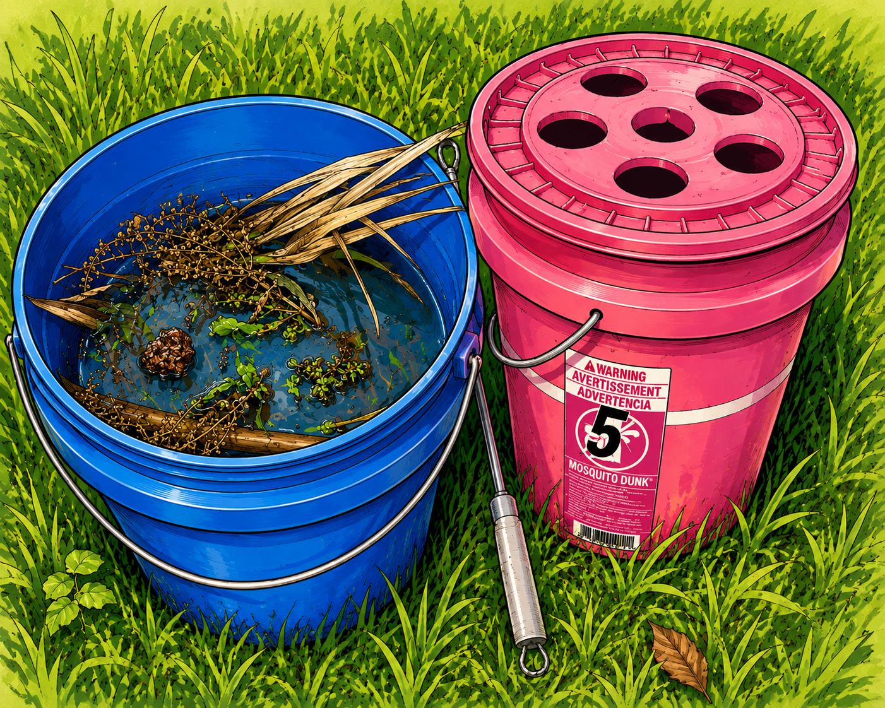
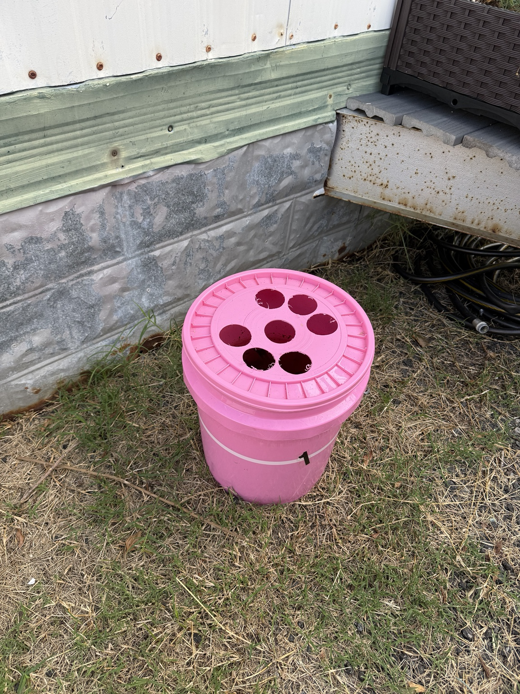
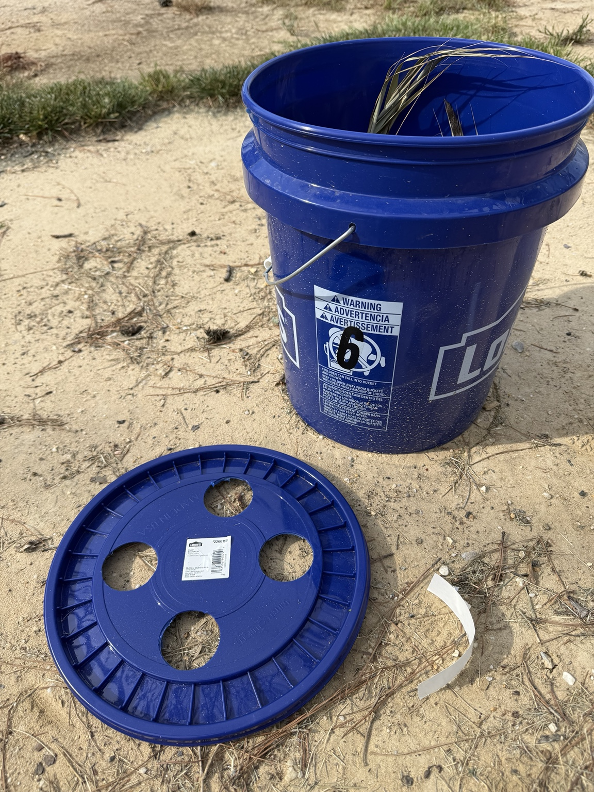

We built some mosquito buckets.
Then we started asking questions.
Real buckets, real mosquitoes, questionable smells, and careful notes. We’re watching what happens when ordinary homeowners use Bti-treated standing water as a mosquito-control tool around the places where we actually live.
The Mosquito School Entrance Exam
Five easy questions. Everybody gets to hear the theme song. The only question is whether you arrive as a graduate or as someone who came to exactly the right school.

Backyard Mosquito School
The official theme song of our very unofficial backyard laboratory.
Backyard Mosquito School
[Verse 1]
We only wanted fewer bites
whenever we stepped outside.
So we filled pink buckets up;
thought we'd figure out this fight.
We threw in leaves and skeeter dunks.
Set 'em underneath the tree.
Asked, “If the moms lay eggs in there,
won't we all soon liv bite-free?”
[Pre-Chorus]
But one small question led to two.
And two turned into ten.
Now we're staring at bucket water,
with our eyes criss-crossed again.
[Chorus]
At the Backyard Mosquito School,
where the buckets make the rules,
we watch the water, take some notes,
and see what skeeters choose.
We don't have to fight everything.
Just break one tiny chain.
Learn a little 'bout how they live
and get ahead of the game.
And something a backyard scientist knows,
every answer breeds more questions.
That's just how mosquito science goes!
[Verse 2]
One was dark as sweet iced-tea.
One was barely brown.
The dog knocked one bucket over,
then took another down.
So we measured every water line;
mapped 'em tree to tree.
Ninety-four feet as the skeeter flies,
now that's good geography.
[Pre-Chorus]
We scraped the sides and taped the specks,
and squinted at the view.
Is that an egg? A piece of leaf?
We haven't got a clue!
[Verse 3]
Then the blue-bucket class arrived
with marsh grass piled high.
Seven days of summer sun
and that smell had multiplied.
Pink was brewing gentle tea.
Blue had found its funk.
And suddenly we're standing there,
discussing scientific gunk.
[Bridge]
We've got sticks and binder clips,
zip ties through the lid.
We are measurin' and labelin'.
Look what one small question did!
Overflow holes and fill lines,
it's ALL under control!
We came out here to stop the bites.
Now we're running Mosquito School.
[Pull back]
But here's the thing we've learned so far:
Not seeing doesn't prove
that nothing ever happened here,
or nothing ever moved.
So we'll watch a little closer.
Ask “What does the data show?”
A good answer isn't always “yes;”
sometimes it's “We don't know!”
[Final Chorus]
At the Backyard Mosquito School,
we have one simple rule:
We don't make the answer fit the story,
We let the data choose.
We don't have to fight everything.
There's knowledge we can gain.
Learn a little 'bout how they live,
and interrupt the chain.
And something a backyard scientist knows,
every answer breeds more questions.
That's just how mosquito science goes!
[Outro]
Fewer breeders,
fewer bites,
let the good bugs fly!
A bucket full of questions,
and a little B. T. I.!
“Every answer breeds more questions. That's just how mosquito science goes!”
See the answers & learn why
- Female mosquitoes bite. Females of biting species take blood meals to support egg production; males feed on plant sugars.
- Mosquitoes begin life in or around water. Eggs, larvae and pupae are tied to aquatic habitats, though some species lay eggs just above the waterline.
- Bti targets feeding mosquito larvae. The larvae must ingest it. It is not an airborne adult-mosquito killer.
- No. Not seeing larvae does not prove eggs were never laid. In a Bti-treated bucket, susceptible larvae may die before we inspect them.
- Learn enough to interrupt the mosquito life cycle without fighting the whole backyard. Fewer breeders. Fewer bites. Let the good bugs fly.
Make an attractive nursery that never graduates mosquitoes.
A dunk bucket is not supposed to repel a female mosquito. The hope is that she chooses the water as a place to lay eggs, while Bti in the water kills feeding larvae before they become biting adults.
This is not a laboratory.
Dogs knock buckets over. Shade changes. Rain happens. Recipes differ. We record those events instead of pretending they didn’t happen.
The goal is useful backyard evidence, not a claim that we have run a controlled academic trial.
Eight buckets. Two island study sites.
The public record describes the study areas without publishing private residential street numbers. Bucket IDs include their color group so Pink B4 and Blue B4 can never be confused.
Six original residential-area buckets
Installed August 7. Pink B0, B1, B3, B4, B5 and B6 each have a lid with five 2-inch round openings and contain water, weathered oak leaves, and one whole mosquito dunk.
The six buckets span two adjoining properties. Four are on one property and two on the neighboring property. A whole dunk is more Bti than this small water surface requires under the current product label, so that original dose remains part of the field record.
Two Community Center buckets
Installed August 22. Blue B4 sits southeast of the parking lot toward the marshfront side. Blue B6 sits northwest of the Community Center toward the roadfront side.
Each uses a blue bucket with a lid containing four 2-inch round openings, about ¼ dunk, and a heavy load of fresh marsh vegetation. After seven days these were distinctly murkier, scummier and smellier than the pink buckets.
picnic table B6
tree B0 B1 B4
hen house
Measured cluster distances: B5–B3 94 ft; B5–B6 92 ft; B3–B6 42 ft; B3–B0 60 ft; B6–B0 40 ft. Diagram not to scale.
NW side B4
SE / marshward
Compass descriptions are approximate because the island and property sit at an angle. Roadfront/marshfront are the clearest field references.


Three weeks produced evidence, but not a verdict.
positively identified larvae
That is an observation, not proof that mosquitoes never used the buckets. Bti-treated larvae may die before we happen to inspect them.
positively identified eggs
Our first craft-stick-and-tape scraping method was too crude to support a confident egg count.
dog-assisted spills
Pink B3 and Pink B4 lost substantial water. Those accidents are part of the data now.